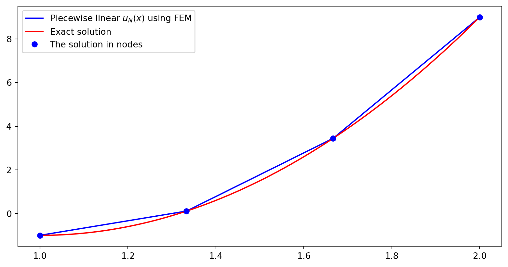
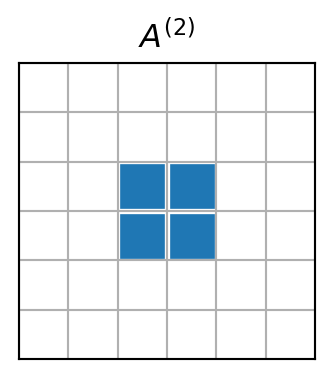

Function approximation by the finite element method
MATMEK-4270
Prof. Mikael Mortensen, University of Oslo
Short recap
We have considered the approximation of functions \(u(x), x \in \Omega =[a, b]\) using \(u(x) \approx u_N(x)\) and
\[
u_N(x) = \sum_{i=0}^N \hat{u}_i \psi_i(x)
\]
\(\psi_i(x)\) have been global basis functions, defined on all of \(\Omega = [a, b]\)
\(\{\hat{u}_i\}_{i=0}^N\) are the unknowns
We have found \(\{\hat{u}_i\}_{i=0}^N\) using
The least squares method (variational)
The Galerkin method (variational)
The Collocation method (interpolation)
Advantages and disadvantages of the global variational methods
Advantages
Spectral accuracy
Efficient for orthogonal basis functions
No mesh
Disadvantages
Mainly feasible for simple domains, like lines and rectangles
Inefficient for non-orthogonal basis functions
Impossible to use for unstructured meshes, like
The finite element method is a variational method using local basis functions
5 global basis functions
2 local piecewise linear basis functions
The Galerkin formulation is the same whether you use a global approach with Legendre polynomials or a local FEM with piecewise linear polynomials. The difference lies all in the function spaces and the choice of basis.
Find \(u_N \in V_N (=\text{span}\{\psi_j\}_{j=0}^N)\) such that
\[
(u-u_N, v) = 0\quad \forall \, v \in V_N
\]
Piecewise linear basis functions lead to piecewise linear approximations \(\small u_N(x)\)

With FEM \(u_N(x)\) is defined everywhere in the domain \(\Omega\) and not just in mesh points.
Interpolation is not needed since \(u_N(x) = \sum_{j=0}^N\hat{u}_j \psi_j(x), \quad x \in \Omega\).
The finite element method is especially well suited for unstructured meshes in complex geometries
Structured mesh
Unstructured mesh
But in this course we will learn FEM using simple structured meshes.
The finite element mesh
The domain \(\Omega\) is divided into \(N_e\) smaller, non-overlapping, subdomains \(\Omega^{(e)}\), such that
\[
\Omega = \bigcup_{e=0}^{N_e-1} \Omega^{(e)}
\]
The smaller subdomains between the blue lines are referred to as elements.
The red dots are referred to as nodes, just like for interpolation methods.
There may be many nodes inside each element
The figure shows a mesh with 5 non-uniform nodes and 2 non-uniform elements
Using more nodes inside each element is how the FEM can achieve higher order accuracy
Finite element basis functions
An element with no internal nodes can at best use piecewise linear basis functions
However, since each basis function is only non-zero on at most two elements, we usually assemble elementwise and add up (this works very well on unstructured meshes!)
The finite element method is much more difficult to implement than global methods, because of the local basis functions and unstructured mesh. Yet, the unstructured mesh and local basis functions make the method much more flexible.
For piecewise linear basis functions there are only 2 non-zero basis functions per element. See element \(\Omega^{(2)}\)
The matrix \({A}^{(2)}\) will have only 4 non-zero items. So it is really a waste of memory using an \((N+1)\times (N+1)\) matrix.

Define a local-to-global map \(q(e, r)\)
\[
q(e, r) = de+r
\]
Mapping local index \(r \in (0, \ldots, d)\) on global element \(e\) to the global index \(q(e, r) \in (0, 1, \ldots, N)\). There are \(d+1\) nodes per element.
For unstructured meshed \(q(e, r)\) needs to be stored explicitly (\(r\) numbering is implicit):
The matrix \(\tilde{A}^{(e)}\) contains the same nonzero items as \(A^{(e)}\), but \(\tilde{A}^{(e)}\in \mathbb{R}^{(d+1) \times (d+1)}\) is dense, whereas \(A^{(e)} \in \mathbb{R}^{(N+1)\times (N+1)}\) is highly sparse.
Local to global mapping in assembly of \(A\)
The 4 smaller matrices represent \(\tilde{A}^{(0)}, \tilde{A}^{(1)}, \tilde{A}^{(2)}\) and \(\tilde{A}^{(3)}\)
Finite element assembly: add up for \(e=0,1,\ldots, N_e-1\) and \((r,s) \in (0,1,\ldots, d)^2\)
differ only in the domain, whereas the shape of the basis functions is the same regardless of domain. The piecewise linear basis functions are always straight lines.
Let us map all elements to a reference domain \(\Omega^r = [-1, 1]\). The affine map from \(x \in \Omega^{(e)} = [x_{q(e,0)}, x_{q(e, d)}] = [x_L, x_R]\) to \(X \in \Omega^r\) can be written for any element as
\[
x = \frac{1}{2}(x_L+x_R) + \frac{1}{2}(x_R-x_L)X
\]
Mapping back and forth is as usual
\[
X(x) \quad \text{or} \quad x(X)
\]
Mapping finite element basis functions
The basis functions \(\psi_{q(e,r)}(x)\) are commonly mapped to the Lagrangian basis functions
\[
\psi_{q(e,r)}(x) = \ell_r(X) = \prod_{\substack{0 \le s \le d \\ s \ne r}} \frac{X-X_s}{X_r-X_s}
\]
where
\[
X_r = -1 + \frac{2r}{d}, \quad r = 0, 1, \ldots, d
\]
and for piecewise linear basis functions (\(d=1\)) we get the following basis functions on the reference domain:
where \(dx/dX = h(e)/2\) and \(h(e)=x_{q(e, d)}-x_{q(e, 0)}=x_R-x_L\), such that for any element, regardless of order \(d\), we can compute the elements of the element matrix as
\[
b_i = (u, \psi_i), \quad i = 0, 1, \ldots, N
\]
This inner product can also be evaluated elementwise, and mapped just like the mass matrix. We define the element vector similarly as the element matrix
\[
b_i^{(e)} = \int_{\Omega^{(e)}} u(x) \psi_{i}(x) dx, \quad i = 0, 1, \ldots, N
\]
\(b_i^{(e)}\) will be highly sparse.
Define a dense local vector
\[
\tilde{b}^{(e)}_r = (u, \psi_{q(e, r)}) = \int_{\Omega^{(e)}} u(x) \psi_{q(e, r)}(x) dx, \quad r = 0, 1, \ldots, d
\]
Using as before \(\psi_{q(e, r)}(x)=\ell_r(X)\) we get a mapping to the reference domain
\[
\tilde{b}^{(e)}_r = \frac{h(e)}{2}\int_{-1}^1 u(x(X)) \ell_{r}(X) dX, \quad r = 0, 1, \ldots, d
\]
Note
The vector \(\boldsymbol{\tilde{b}}^{(e)}\) needs to be assembled with an integral for each element because of \(u(x(X))\)
Assemble by adding up for all elements \(e=0,1, \ldots, N_e-1\) and \(r=0,1, \ldots, d\)
\[
b_{q(e, r)} \mathrel{+}= \tilde{b}_r^{(e)}
\]
Implementation \(\small \boldsymbol{b}^{(e)}\)
def map_true_domain(xj, e, d=1, x=x): # return x(X) xL, xR = get_element_boundaries(xj, e, d=d) hj = get_element_length(xj, e, d=d)return (xL+xR)/2+hj*x/2def map_reference_domain(xj, e, d=1, x=x): # return X(x) xL, xR = get_element_boundaries(xj, e, d=d) hj = get_element_length(xj, e, d=d)return (2*x-(xL+xR))/hjdef map_u_true_domain(u, xj, e, d=1, x=x): # return u(x(X))return u.subs(x, map_true_domain(xj, e, d=d, x=x))def assemble_b(u, xj, d=1): l = Lagrangebasis(np.linspace(-1, 1, d+1), sympy=False) N =len(xj)-1 Ne = N//d b = np.zeros(N+1)for elem inrange(Ne): hj = get_element_length(xj, elem, d=d) us = sp.lambdify(x, map_u_true_domain(u, xj, elem, d=d)) integ =lambda xj, r: us(xj)*l[r](xj)for r inrange(d+1): b[local_to_global_map(elem, r, d)] += hj/2*quad(integ, -1, 1, args=(r,))[0]return b
Note
We need to perform an integral by calling quad for each \(r\) in each element.
Example: \(\small u(x) = 10(x-1)^2-1, x \in [1, 2]\)
Use the previously implemented assemble_mass and assemble_b to find the approximation of \(u(x)\) using piecewise linear functions and FEM:
def assemble(u, N, domain=(-1, 1), d=1, xj=None): mesh = np.linspace(domain[0], domain[1], N+1) if xj isNoneelse xj A = assemble_mass(mesh, d=d) b = assemble_b(u, mesh, d=d)return A, bN =4xj = np.linspace(1, 2, N+1)A, b = assemble(10*(x-1)**2-1, N, d=1, xj=xj)uh = np.linalg.inv(A) @ byj = np.linspace(1, 2, 1000)plt.figure(figsize=(6, 3.5))plt.plot(xj, uh, 'b-o', yj, 10*(yj-1)**2-1, 'r--')plt.legend(['FEM', 'Exact']);
Note
Since we are using piecewise linear polynomials we can simply plot uh = \((u_N(x_i))_{i=0}^N=(\hat{u}_i)_{i=0}^N\) and matplotlib will correctly fill in a linear profile between the points.
Why still linear interpolation? We need to use the higher order \(u_N(x) = \sum_{j=0}^N\hat{u}_j \psi_j(x)\) between mesh points! \(\rightarrow\) FEM evaluation
Finite element evaluation
The finite element solution differs from the finite difference solution in that the solution is automatically defined everywhere within the domain.
\[
u_N(x) = \sum_{j=0}^N\hat{u}_j \psi_j(x)
\]
However, most basis functions will be zero at any location \(x\). We need to find which element \(x\) belongs to! And then evaluate only with non-zero basisfunctions
def fe_evaluate_v(uh, pv, xj, d=1): uj = np.zeros(len(pv))for i, p inenumerate(pv): uj[i] = fe_evaluate(uh, p, xj, d)
Alternatively, use vectorization, but not really straightforward:
def fe_evaluate_v(uh, pv, xj, d=1): l = Lagrangebasis(np.linspace(-1, 1, d+1), sympy=False)# Find points inside elements elem = (np.argmax((pv <= xj[::d, None]), axis=0)-1).clip(min=0) xL = xj[:-1:d] # All left element boundaries xR = xj[d::d] # All right element boundaries xm = (xL+xR)/2# middle of all elements hj = (xR-xL) # length of all elements Xx =2*(pv-xm[elem])/hj[elem] # map pv to reference space all elements dofs = np.array([uh[e*d+np.arange(d+1)] for e in elem], dtype=float) V = np.array([lr(Xx) for lr in l], dtype=float) # All basis functions evaluated for all pointsreturn np.sum(dofs * V.T, axis=1)
More difficult example: \(\small u(x)=e^{\cos x}\)
Compute \(L^2(\Omega)\) error and compare with global Chebyshev and Legendre methods
This illustrates nicely spectral versus finite order accuracy. With \(d=1\) the FEM obtains second order accuracy and the error disappears as the linear (in the loglog-plot) green curve with slope \(-2\) (from error \(\sim N^{-2}\)). The spectral error on the other hand disappears exponentially as \(\sim e^{-\mu N}\), faster than any finite order.
Finite element software
Developed originally at Chalmers University of Technology and UiO
Very flexible and easy to use
Solves PDEs with many different finite elements, including Lagrange
N =4A1, b1 = assemble(u, N, (-1, 1), 1)uN = np.linalg.inv(A1) @ b1plt.figure(figsize=(5.5, 3.8))plt.plot(np.linspace(-1, 1, N+1), uN, 'b')xj = np.linspace(-1, 1, 100)plt.plot(xj, sp.lambdify(x, u)(xj), 'r')
Exactly the same result for the same method
FEniCS uses exactly the same method with piecewise linear basis functions as we have described using Sympy/Numpy and as such we get exactly the same matrix/vectors:
The finite element method (FEM) is a variational method using local basis functions.
The FEM uses the same Galerkin method as the methods using global basis functions.
The FEM is assembled by running over all elements and assembling local matrices and vectors that are subsequently added to global matrices and vectors.
Since all assembly work is performed elementwise, the FEM is very well suited for unstructured meshes.